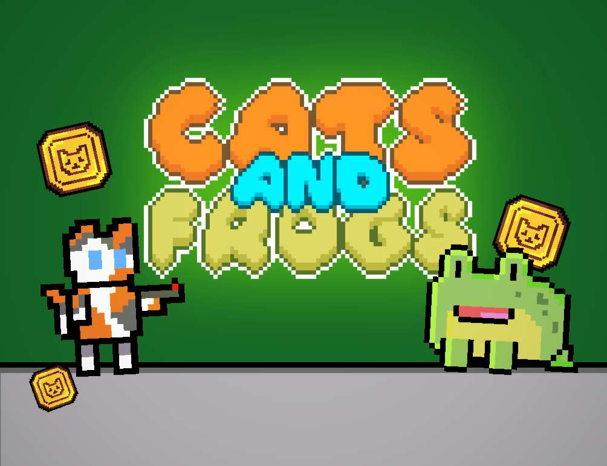
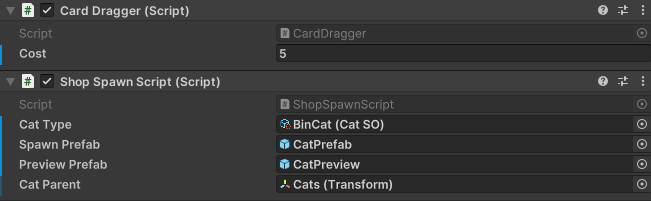
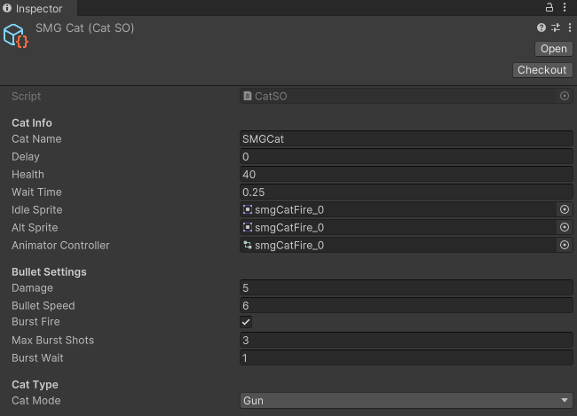

Cats and Frogs - Group Game Project
Overview
2D Tower Defense
Date Started: 28th January 2025
My Role: Developer & Concept Artist
Software Used: Unity, C#, Aseprite
Section 1 | Conception & Goal
1.1 Introduction & Goal
This is a Group Game Project made in Year 1, Semester 2.
The goal is to develop a functioning prototype of a game. The brief was as follows:
"Working in teams, create a tower defense game targeted at mobile devices, with high performance."
My role in this project was as Developer.
I worked in a team of 1 Developer and 2 Artists/Designers. However we all concepted our project as a group.
1.2 Concept and Inspiration
As a team we initally came together and brainstormed ideas for our project, the only restriction in the brief was that it needs to be a tower defense mobile game.
After choosing the tower defense brief, we gathered all of our ideas together to decide on the concept of the game. After some time of brainstorming, we concluded that we would like our game to draw heavy inspiration from Plants vs. Zombies, but be adapted into a vertical format, with retro design elements.
As a team we quickly pulled together some reference art:
We then developed the ideas into a final setting concept: The towers in this game would be Cats, and the enemies would be Frogs, and the goal is to defend a pond from the incoming frogs..
1.3 Tools and Software
Unity
Unity is the game engine we chose to use, due to its familiarity and stength of 2D tools and workflow
Trello
Trello is a visual project management tool that uses boards, lists, and cards to help individuals and teams organise tasks and collaborate efficiently. We used this to manage tasks and share the workload
Aseprite & Libresprite
The artists used mainly Aseprite and Libresprite. These are both pixel art programs, Libresprite is a free fork of Aseprite, and they are intercompatible.
1.4 Programming
Before I began programming, I setup a new Unity project, installed all the necessary packages (e.g. 2D tools) and created a GitHub repository to use as our version control software.
My Responsibilities
As the sole developer, I planned my own schedule, and broke down the key features needed for a working prototype into the allotted time.
Development Timeline Overview:
Week 1: Conceptualisation
- Research, concept art
- Solidify gameloop and concept
Week 2: Grid & Drag and Drop
- Drag and Drop using Touch
- Placement of objects on the grid
Week 3: Cats and Frogs
- Create Scriptable Objects for both entity classes
- Movement
- Attacking
Week 4: Health
- Create health
- Destroy entities on death
Week 5: Shop
- Create functional shop
- Fix bugs
- Functional UI
Week 6: Final presentation and individual reflections
- Grid System -
My first task was to develop the grid system that would be fundamental to the games mechanics.
My first iteration of the grid system was very simple, only allowing for placement and removal of a temporary prefab. [1.4.1]
I first created a demo scene with containers in a Grid Layout Group, with a BoxCollider2D, and the GridSquare tag.
 1.4.1
1.4.1
void Update()
{
if (Input.touchCount > 0 && Input.GetTouch(0).phase == TouchPhase.Began)
{
Vector2 touchPosition = Input.GetTouch(0).position;
Vector3 worldPosition = Camera.main.ScreenToWorldPoint(new Vector3(touchPosition.x, touchPosition.y, -Camera.main.transform.position.z));
worldPosition.z = 0;
LayerMask gridLayerMask = LayerMask.GetMask("TileGrid");
RaycastHit2D hit = Physics2D.Raycast(worldPosition, Vector2.zero, Mathf.Infinity, gridLayerMask);
if (hit.collider != null && hit.collider.gameObject.CompareTag("GridSquare"))
{
Transform gridSquare = hit.collider.transform;
if (gridSquare.childCount == 1 || gridSquare.childCount == 0)
{
GameObject spawned = Instantiate(prefabToSpawn, gridSquare.position, Quaternion.identity);
spawned.transform.parent = gridSquare;
}
else
{
foreach (Transform child in gridSquare)
{
if (child.CompareTag("Cat"))
{
Destroy(child.gameObject);
}
}
}
}
}
}
I also created a separate scene, where I developed the Drag-and-Drop system, another key mechanic. I ended up creating a DragManager.cs, which handles whether dragging is allowed, if the player is currently dragging, etc.
public static class DragManager
{
public static bool isDragAllowed;
public static bool isDragging;
public static GameObject dragObject;
public static int currentDraggingId = -1;
}
I separated out the touch functions from the grid system to a TouchManager.cs to separate concerns. This invokes Unity Events that are used by all scripts involving touch input.
private void Update()
{
if (Input.touchCount <= 0) return;
Touch touch = Input.GetTouch(0);
Vector3 touchPosition = Camera.main.ScreenToWorldPoint(touch.position);
touchPosition.z = 0;
switch (touch.phase)
{
case TouchPhase.Began:
currentTouchedObject = GetTouchedObject(touchPosition);
OnTouchBegan?.Invoke(touchPosition, touch);
break;
case TouchPhase.Moved:
OnTouchMoved?.Invoke(touchPosition, touch);
break;
case TouchPhase.Ended:
case TouchPhase.Canceled:
OnTouchEnded?.Invoke(touchPosition, touch);
currentTouchedObject = null;
break;
}
}
The Drag-and-Drop function is handled by CardDragger.cs, each shop tile has its own instance of this script. When the shop tile is touched, if the requirements are met, it instantiates a preview image on the UI layer (to allow for smooth movement with the pixel perfect camera) which tracks the touch position, when let go, if it is over a grid square, ShopSpawnScript.cs handles spawning and deployment of the Cat.
private void HandleTouchBegan(Vector3 touchPosition, Touch touch)
{
if (!CameraController.atShop || !DragManager.isDragAllowed)
return;
if (TouchManager.Instance.IsObjectTouched(gameObject, touchPosition) && canAfford)
{
DragManager.isDragging = true;
DragManager.currentDraggingId = instanceId;
shopSpawnScript.SpawnPreviewCat(touchPosition);
}
}
private void HandleTouchEnded(Vector3 touchPosition, Touch touch)
{
if (!DragManager.isDragging || DragManager.currentDraggingId != instanceId)
return;
RaycastHit2D hit;
if (TouchManager.Instance.RaycastOnLayer(touchPosition, gridLayer, out hit))
{
Vector2 gridPosition = hit.collider.transform.position;
if (!ContainerHandler.IsPositionOccupied(gridPosition))
{
DragManager.isDragging = false;
shopSpawnScript.RemovePreviewCat();
shopSpawnScript.DeployCat(gridPosition);
CurrencyManager.Instance.SpendMoney(cost);
ContainerHandler.OccupyPosition(gridPosition, shopSpawnScript.GetSpawnedObject());
}
else
{
DragManager.isDragging = false;
shopSpawnScript.RemovePreviewCat();
Debug.LogWarning("Position already occupied");
}
}
else
{
DragManager.isDragging = false;
shopSpawnScript.RemovePreviewCat();
Debug.LogWarning("Placement outside of grid not allowed");
}
}
void LateUpdate()
{
if (DragManager.isDragging && DragManager.currentDraggingId == instanceId && Input.touchCount > 0)
{
Vector3 TouchPosition = Camera.main.ScreenToWorldPoint(Input.GetTouch(0).position);
TouchPosition.z = 0;
GameObject spawnedObject = shopSpawnScript.GetSpawnedObject();
if (spawnedObject != null)
{
spawnedObject.transform.position = TouchPosition;
}
}
}
 1.4.2
When developing this, I encountered bugs such as the preview not tracking to the touch position correctly, and the wrong Cat types being shown.
I fixed these by moving the tracking code into LateUpdate(), which fixed the tracking, and I implemented the checking of instanceID to ensure that the dragging is being performed by the correct DragManager.cs
- Scriptable Objects -
To allow for the easy creation of new types/tiers of Cats and Frogs, I decided to use Scriptable Objects to hold the values and data for both the Cats and the Frogs.
Using this, it is easy to create a new entity by only modifying the values in the inspector
e.g. CatSO.cs
public enum CatType
{
Gun,
Melee,
CoinCollector
}
[CreateAssetMenu(fileName = "NewCat", menuName = "Game/Cat")]
public class CatSO : ScriptableObject
{
[Header("Cat Info")]
public string catName;
public float delay;
public float health = 100;
public float waitTime = 1f;
public Sprite idleSprite;
public Sprite altSprite;
public RuntimeAnimatorController animatorController;
[Header("Bullet Settings")]
public float damage = 10;
public float bulletSpeed = 5f;
public bool burstFire = false;
public int maxBurstShots = 3;
public float burstWait = 1f;
[Header("Cat Type")]
public CatType catMode;
}
This allows a developer or artist to easily modify the data for each Cat type. The values are editable in the inspector, and intuitive to modify. [1.4.3]
 1.4.3When instantiated, the entities take the data from the Scriptable Objects through a setup method. The desired SO is piped in, and the data is taken.
e.g. in CatController.cs
public void SetupCat(CatSO catType)
{
healthScript.health = catType.health;
waitTime = catType.waitTime;
damage = catType.damage;
speed = catType.bulletSpeed;
delay = catType.delay;
burstFire = catType.burstFire;
maxShotsBurst = catType.maxBurstShots;
burstWait = catType.burstWait;
animationController.Initialise(catType.idleSprite, catType.altSprite, catType.animatorController);
if (catType.catMode == CatType.CoinCollector)
{
binCatScript.enabled = true;
binCatScript.InitialiseBinCat(waitTime);
}
else
{
binCatScript.enabled = false;
}
StartCoroutine(AttackAndWait(delay, waitTime));
}
- Projectiles -
I had had previous experience with projectile-based weapon fire in my earlier project 3D Top-Down Shooter, and I wanted something similar for this
project, so the projectile system ended up as being an instantiated prefab with scripts that handle movement, collision, and time of life.
The collision is handled by a CircleCollider2D set to Trigger, and when it collides with an object on the Frogs layer, if the tag is "Frog", it
finds the EnemyController.cs script on the collided gameObject, and calls the TakeDamage(float damage) function in the enemyController, then destroys itself.
The collision script also holds a static float for damage, which can be set by calling the SetDamage(float newDamage) function in ProjectileCollision.cs
The firing of projectiles is handled by a script that is on the universal CatPrefab, and is enabled or disabled dependent on the CatType from the CatSO.
Whenit is called in the AttackAndWait() function, it instantiates and sets up the projectile.
public class ProjectileFire : MonoBehaviour
{
[SerializeField] GameObject prefab;
[SerializeField] Transform firePoint;
private ProjectileCollision projCollisionScript;
public void Fire(float damage, float speed)
{
PlaySound();
GameObject projectile = Instantiate(prefab, firePoint.position, Quaternion.identity);
projCollisionScript = projectile.GetComponent();
projCollisionScript.SetDamage(damage);
ProjectileMovement movement = projectile.GetComponent();
if (movement != null)
{
movement.SetupProjectile(damage, speed);
}
}
private void PlaySound()
{
AudioPlayer.Instance.PlaySFX(AudioPlayer.Instance.gunFire);
}
}
Development of Hangry Rats is mostly keeping pace with the weekly schedule we had planned. As of week 4, we have successfully prototyped core mechanics, such as the player controller, pickup system, door/button mechanics, enemy AI, and I also developed a win condition (when a specific number of pickups
are collected, a door to the next level unlocks.
As with all development projects, some things didn't go as planned, and are a valuable learning experience.
Following my reflection, I have outlined a weekly plan to ensure the project is fully playable before the 6 weeks are over: [1.2.2] Residential Area Tileset (2021). [Art]. Free Game Assets (GUI, Sprite, Tilesets). Retrieved from https://free-game-assets.itch.io/residential-area-tileset-pixel-art [1.2.3] pixel city (animated) 2 (2018). [Art]. Lazur. Retrieved from https://openclipart.org/detail/310402/pixel-city-animated-2 [1.2.4] Pixel art street with buildings, stores, trees and sky with clouds (n.d.). [Art]. Chuckchee | Dreamstime.com. Retrieved from https://www.dreamstime.com/pixel-art-street-buildings-stores-trees-sky-clouds-image99878669
Reflection on Current Progress
The things that still need implementing from weeks 3-4 include: spawning systems for ingredients and enemies, and the creation/design of more fun & thematic levels.
With core systems complete, we're on track to delivering a suitable prototype that fits the brief when the 6 weeks are over, and the remaining weeks will be focused on creating puzzles, UI, and improving the gameloop.
Limitations/Failures
For example, development felt mostly disorganised, due to poor communication and lack of leadership. In future group projects, I think it would be valuable
to designate one person from each team (artists/developers) as the lead, and give them the role of managing everything and ensuring everything is organised, done on time, and that every system works together.
Using GitHub for version control hindered our progress from the beginning, as a lot of time was spent both setting it up and teaching everyone how to use it, however, progress speed quickly ramped up after we had all
gotten used to how it works. Perhaps in future projects, Unity's own Version Control System would be preferable.
A personal failure of mine is that I spent too long working on the concept of the game, instead of quickly diving into developing core mechanics that would definitely be usable in any scenario (e.g. a Character Controller).
This caused the other developer a small delay before he could begin proper progress on his enemy AI system, and offset us as a team from our timeline goals.
A lot of the systems I created do not work in every situation, due to a lack of polish. For example, if the Player & Rat stand on a button at the same time, when one of them steps off, the button thinks that it is deactivated.
I don't think this has a huge impact for a prototype, however it is still a notable limitation of my scripts.
I believe that this is fixable by tracking how many objects are on the button, and only deactivating it if the counter is zero, instead of on any OnTriggerExit2D event.
Based on these limitations I think the further 2/3 weeks of development time left will be enough to make everything functional as intended. I also think that a further 1-2 weeks on top of that would be necessary if we
want the game to have significant polish.
An area I would need to research is how to use normal maps on 2D sprites and how to effectively light a 2D scene in a 3D 'world', as the current game has a very 'flat' and uninspiring look to it, which I believe would
be greatly improved with more atmospheric lighting. Furthermore, I also need to research how to properly transition between animations on a sprite, for example between jumping, running, etc. This would make the game feel much more lively and fun.
Further Development
Week 4 (cont.):
- Development & implementation of enemy & ingredient spawning
- Design and build levels using the core mechanics already built
- Build a functioning Main Menu & improved UI
- Bugfix
Week 5:
- Design a more appealing Main Menu & UI
- Refine Character & Enemy animations & transitions
- Implement normal maps where necessary
- Design and build levels using the core mechanics already built
- Bugfix
Week 6:
- Light & polish up levels
- Polish mechanics
- Playtest
- Bugfix
Key Tasks & Dependencies
Art: Must be completed before main menu & UI can be polished, before sprite animations can be finalised, and before lighting.
Button Fix: Must be completed before designing puzzles, as to not accidentally design something which is unplayable after the fix.
Audio Clips: Must be completed before implementation.
References